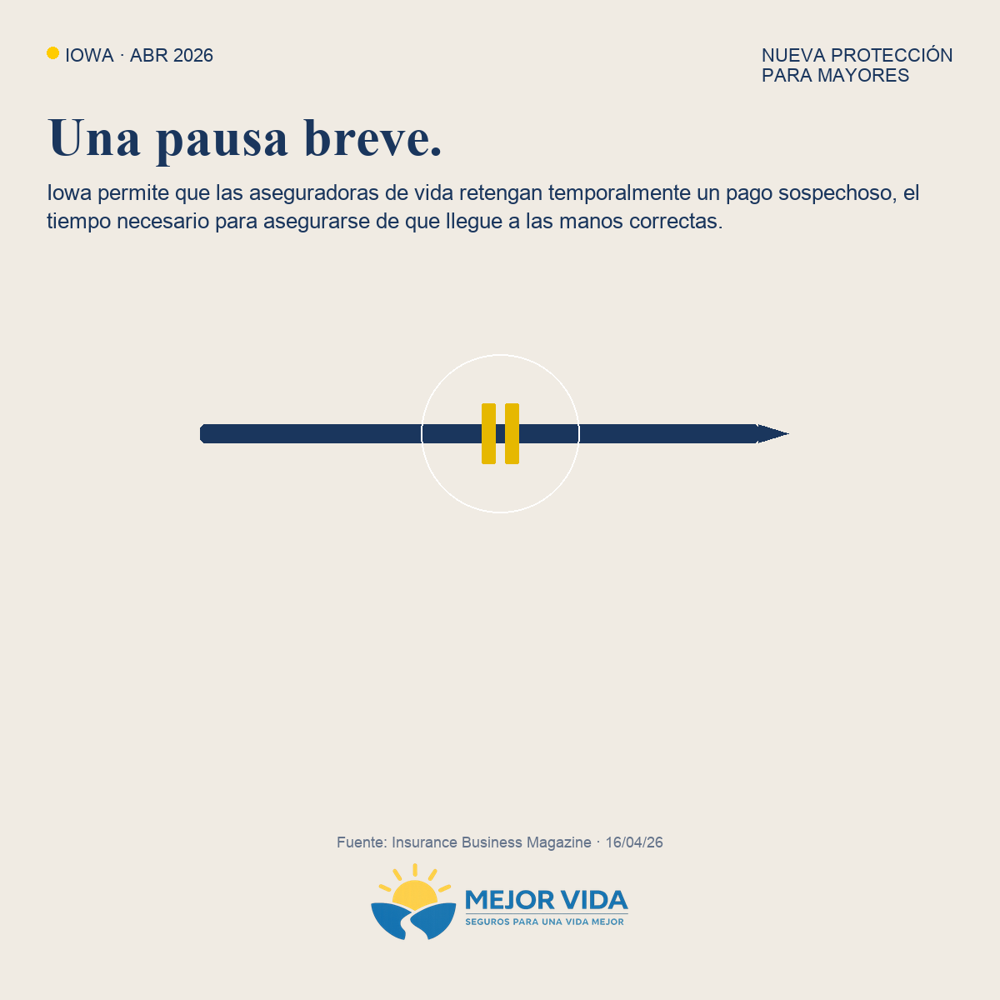

Vista previa — publicación Facebook (local)
Abre este archivo desde el repo: FB/review-facebook-post.html. Para regenerarlo tras editar el paquete: python3 tools/sync_fb_review_html.py
Regla: el enlace del blog va en el primer comentario, no en el post principal.

¿Sabías que en Iowa una aseguradora de vida puede pausar por poco tiempo el pago del seguro si cree, con fundamento, que un adulto mayor podría estar siendo explotado con dinero?
No es para molestar a las familias honestas. Es para frenar a quienes aprovechan el duelo o la confusión para quedarse con lo que no les toca. La compañía debe revisar el caso y, si hace falta, coordinar con Protección para Adultos o las autoridades. La pausa no es para siempre.
Si algo en tu familia te suena raro—alguien nuevo que “ayuda” demasiado, firmas apuradas, cambios repentinos de beneficiario—vale la pena hablar con alguien de confianza o con el departamento de seguros de tu estado.
En Mejor Vida no estamos para asustarte ni presionarte. Estamos para explicar con claridad y ayudarte a proteger a los tuyos.
Comenta “INFO” si quieres el desglose completo (con contexto y preguntas frecuentes),
o “REVISAR” si quieres que revisemos tu situación o tus dudas sobre seguro de vida o gastos finales.
También puedes mandarnos mensaje directamente si prefieres no comentar en público.
#SeguroDeVida #GastosFinales #ProtegeATuFamilia #FamiliaHispana #AdultosMayores
Primer comentario
Si quieres leer el artículo completo, aquí te lo dejo:
https://www.mejorvidainsurance.com/blog/weekly-insurance-update-2026-04-19.html#story4
(Fuente citada en el blog: Insurance Business Magazine, 16 abr. 2026.)
Texto alternativo (corto)
Iowa permite que una aseguradora pause un pago de vida un tiempo si hay señales de explotación financiera a un adulto mayor. No es contra familias normales; es contra abusos en momentos delicados.
Comenta “INFO” para el artículo o “REVISAR” para tu caso. También por mensaje directo.
#SeguroDeVida #GastosFinales #ProtegeATuFamilia
Prompt de imagen / notas
Gráfico Canva entregado: Iowa abr 2026, NEW SENIOR SAFEGUARD, pausa sobre flecha, titular “A brief pause.”, copy sobre pagos sospechosos y manos correctas; marca Mejor Vida. Archivo: FB/assets/iowa-senior-safeguard-fb-2026-04.png.
Keywords ManyChat
INFO, REVISAR
Comentario fijado (opcional)
Si comentas INFO o REVISAR, te respondemos por mensaje. La información es educativa; cada caso y cada estado pueden ser distintos.